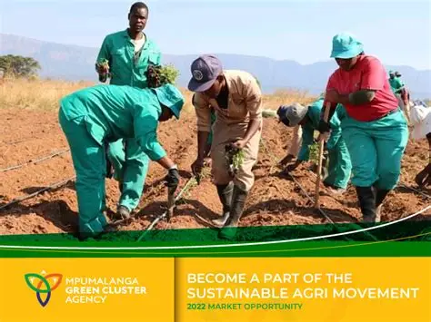

Together for a Greener Tomorrow
Since 2018, Mpumalanga GreenFuture has been at the heart of Mbombela’s environmental movement, starting with clean‑ups along the Crocodile River and growing into a registered non‑profit organisation.
Our Mission
GreenFuture empowers communities to protect the environment through clean‑ups, tree planting, and sustainability workshops. We believe that protecting ecosystems is not only about planting trees or cleaning rivers, but also about inspiring future generations to value and safeguard their environment.
Our Purpose
The purpose of Mpumalanga GreenFuture is to act as a unifying platform for environmental action in the Lowveld. Our website is designed to consolidate campaigns, resources, and opportunities for involvement into one professional hub, replacing fragmented social media posts with a credible and accessible source.
Our Audience
We engage with diverse groups across Mbombela:
- Schools: Teachers and learners who integrate sustainability into education.
- Residents: Community members who want to participate in clean‑ups and tree‑planting drives.
- Eco‑volunteers: Individuals passionate about environmental activism.
- Donors: People who provide financial or material support to sustain projects.
- Corporate sponsors: Businesses in Mpumalanga that want to demonstrate corporate social responsibility.
Our Goals
The website’s goals are directly tied to our mission and vision:
- Raise awareness of environmental issues in Mbombela and the Lowveld.
- Recruit volunteers for clean‑up and tree‑planting drives.
- Attract donations and sponsorships with secure online payment integration.
- Share educational resources with schools and communities.
- Build credibility by showcasing past projects, testimonials, and measurable impact metrics.